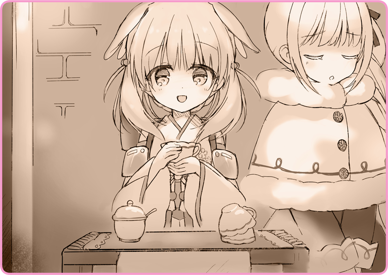

プリマドール・アンコール
03-03 冬の花火（３）
一夜明けて、からりと晴れた青空がどこまでも広がっている。
雪はすっかり止んで、辺りは一面の銀世界。
灰桜の煙突からは、白い蒸気がぽっぽっと吹き出していた。

「い、いかがでしょうか……」
リリアの前には、部屋から持ち出した小机がひとつ。
伏せて重ねられたティーカップに、大きなシュガーポットがひとつ。
地図の裏に書いた宣伝ポスターが、いかにも即席で作りましたという雰囲気で貼られている。
「……あのね、灰桜」
いい考えがある、一緒にお仕事しに行きましょう……そう彼女は言った。
その言葉を、一瞬でも信じてしまったのが間違いだったのかもしれない。
朝からホーロー鍋を持ち出して、厨房でなにやらコトコト煮ていたので、何事かとは思っていたのだ。
「な……なにを？」
「それは知っているけど、一杯売っていくらの儲けになると思うの？」
「それにね、言ったでしょう？ 私、あまり目立ちたくないの――」
耳元でそう懸命に伝えたとき、ちょうど来客があった。
「おやおや、これは美味しそうだ」
まるまると太った気の良さそうな男だ。口元をびっしり覆ったヒゲが、いかにもアルタリア人らしい。
「一杯もらおうかな」
にこやかにお金を受け取っている。
「私がやるの？」
ティーカップを手に取ると、灰桜の背後に回る。
なんでも燃料貯蔵タンクに、はちみつハーブティーを入れているとのことだ。そこはいつも温かく、飲み物を適温に保てるらしい。果たして詰め替えていいのかどうかは分からなかったが、そこを深く考えるのはやめておこうと思った。
「……これでいいのかしら」
排水弁を捻って、ティーカップに注いでいく。
濃いルビー色。甘いコケモモと、ぴりりと効いたナツメグの薫りが鼻先をくすぐった。
「どうぞ……」
視線を落として、男にはちみつハーブティーを差し出す。
カップを両手で抱くように持って、しばらくその温かさを堪能してから、おいしそうに味わっていた。
「ああ、生き返るよ。ありがとう」
「ああ、もちろんだよ。ところで……」
じっと二人を交互に見つめてくる。リリアはさりげない仕草で、口元を隠すようにストールを巻いた。
「こっちの子は、人形だね？」
「はるばる東邦からやってきたのかね」
「あの、ごめんなさい、この子については……」
あまり詮索されたくなくて、リリアは間に入る。
「ああ、申し訳ない、つい懐かしくなってね」
「僕は歌劇を見に行くのが好きでね。そこには歌劇人形がいたんだよ」
その言葉に、リリアは心臓がきゅっと締め付けられる思いだった。
慌ててカップを拭いているフリをして、男に背中を向ける。
「レバルジャク少女歌劇の名物なんだよ。少女と人形が、それは素晴らしいハーモニーを奏でるんだ」
「最近はほとんど公演しなくなってしまったけどね……そうだ、キミも歌ってくれるかい？」
「ああ、久しぶりに聞きたいんだ」
「やはり定番といえば、湖と白鳥かな」
灰桜は、すうっと冷たい空気を吸い込む。
そっと目を閉じて、そして胸元に手を当てて。
冬空にその歌声を響かせた。
「………う゛」
音程もなにもあったものではない、ひどい調子外れの歌がこだました。
「ちょ、ちょっと、灰桜」
「調子外れにも程があるわ。まず最初の歌い出しから合ってないのよ」
「ああ、もう……ほら、わたしに続いて歌ってみて」
リリアがすこし控えめに喉を震わせる。
それに続いて、灰桜が真似をして声を上げた。
「……ほう」
そこは人形の面目躍如と言ったところか、なんどか調子を合わせただけで、灰桜は正確な音を掴んだ。観客のおじさんも感心した様子で唸っている。
「続けて歌ってみて」
「「～～～～～♪ ～～～～～♪ ～～～～～♪」」
伸びやかな歌声が響いていく。
リリアにとっても、それはどこか懐かしい体験だった。
かつて劇団ですごしていたころ、よくこうやって人形たちと音を合わせたものだ。
もっとも、相方は灰桜ほど下手ではなかったけれど。
「「～～～～～♪」」
目と目が合うと、にっこりと微笑んでくれる。
灰桜の笑顔が本当に楽しそうで、リリアの歌声はすこしずつ大きくなっていった。
ぱちぱちぱちぱちぱち。
やがて歌い終えると、拍手が響いた。
眼前で歌声を聞いていたおじさんだけではない。
気づくと、辺りには人だかりができていて、みんな手を叩いていた。
「素晴らしい！ みんな、歌のお礼にハーブティーを買ってやってくれ！」
そんなことを言うものだから、次々とお客さんが訪れていく
「先程注文のお客様……あ、代金はこんなにいただくわけには……え、歌のぶん、ですか？」
飛ぶように売れていくはちみつハーブティー。
ついでに余分にチップを置いていくお客さんもいて、すっかり大盛況だった。
執筆：丘野塔也 挿絵：まろやか ＣＶ：和氣あず未（灰桜）
©VISUAL ARTS / Key